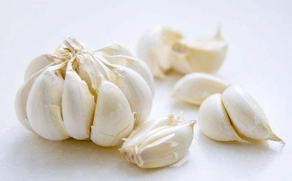

家常烹调中，大蒜是必不可少的佐料。一道菜加入蒜末、蒜片、蒜瓣，就能增色不少。与此同时，食用大蒜或服用含有大蒜提取物的营养补充剂，被认为是降低胆固醇、患癌风险、血压水平和患心脏病风险的一种天然方式。大蒜的不同做法有哪些营养优势？一起听听中国农业大学食品科学与营养工程学院副教授范志红对大蒜的解析吧！
大蒜发芽营养翻倍 一提到发芽，大多数人认为“这东西没法吃了”。也有
其实，只要蒜瓣本身没有发霉变色，发芽的大蒜是能吃的。大蒜的确能防癌，但发芽大蒜更防癌不靠谱。南京市中医院的营养师吴欣耕认为：“大蒜含有大蒜素，的确具有杀菌防癌的功效，且切片后暴露在空气中10分钟再食用，效果更佳。”但对于发芽的大蒜更抗癌的说法，吴欣耕表示：“这倒不见得，大蒜发芽后，所有的营养物质都会有损失，大蒜素当然也不例外。”至于在阳光下发芽的大蒜不能食用这一说法，吴欣耕表示，发芽大蒜可以食用，在什么环境下发的芽，影响不大。
剥开发芽的大蒜，会看到中间产生了蒜的绿色嫩苗。绿色嫩苗从蒜瓣中长出来之后，就是蒜苗这种绿叶蔬菜。若将蒜苗放在加水的盘子里，不仅能给厨房带来绿植的美感，还可以代替葱花做调味品。把蒜苗种在土里继续生长，叶子长大后就叫做青蒜。吃不惯大蒜瓣的人可以直接食用蒜苗，蒜苗的维生素含量超过大蒜瓣，也有一定的杀菌能力。
发酵黑蒜口感好黑蒜又名发酵黑蒜，是用新鲜生蒜，带皮在发酵箱里发酵60-90天后制成的食品。经过发酵制成黑蒜后，大蒜的水分会降低50%左右，糖分和氨基酸会明显增加，B族维生素含量也上升。大蒜颜色由白变黑，是因为长时间发酵和保温之后发生“美拉德反应”。此时大蒜素已经降解，而多聚果糖等成分被分解产生果糖，增强了甜味，故而黑蒜口感绵甜，不再有辛辣味，肠胃怕刺激的人群也能食用，更不用担心会有口气，非常受年轻人欢迎。
但关于盛传的“黑蒜降三高”“黑蒜提高免疫力”之类说法不必太当真，如果日常吃黑蒜的数量不大，较难达到这些功效。
另外，国外研究发现，黑蒜中的含硫化合物能促进肠产生一种酶或称为蒜臭素的物质，通过增强机体免疫能力，阻断脂质过氧化形成及抗突变等多条途径，消除在肠里的物质引发肠道肿瘤的危险。但是，目前尚无法定论究竟需要产生多少这样的酶才能有效地发挥黑蒜的抗肿瘤作用。
大蒜腌着吃促消化北方有腌渍大蒜的传统，腊八蒜、糖醋蒜等都是人们喜爱的做法，它们能保留大蒜中的所有矿物质成分，而且能在很大程度上消除蒜辣味，不过其杀菌作用与生大蒜比会降低。
中国农业大学食品科学与营养工程学院赵广华教授研究发现，糖醋蒜的提取液中含有抗氧化活性，而且对HL-60人白血病细胞、MDA-MB人乳腺癌细胞、BGC-823人胃癌细胞都有明显的抑制作用。可见，虽然经过泡制，蒜中的保健成分仍然能够部分发挥作用。
大蒜在加热的过程中，蒜中起到抗菌作用的有机硫化物含量会逐渐下降，温度越高下降越快，所以，熟吃大蒜并不能很好地起到杀菌效果。而捣碎生吃大蒜可以有效保留大蒜素，杀灭细菌和病毒。完整的大蒜含有蒜氨酸和蒜酶，当大蒜被碾碎后，这两种成分就会相互作用，产生具有保健作用的大蒜素，它是大蒜独特辛辣风味的主要来源。大蒜捣碎成泥，先放10-15分钟后再吃，这样有利于大蒜素的生成。此外，大蒜中的微量元素硒含量很高，适量摄取硒元素有辅助抗癌的功效。
家里用蒜拌凉菜、吃饺子时用醋和少量
另外，还要提醒大家，大蒜本身辛辣，每天生吃不宜超过2-3瓣，有胃溃疡、腹泻或正在服药的人忌食；有眼疾、肝病或其他重病也不能盲目生吃大蒜了。
烧烤大蒜去辣味孜然大蒜、炭烧大蒜外焦里嫩，口感香糯绵软，烧烤出来的大蒜几乎没有辛辣味，吃了之后不会口气发臭，非常受年轻人欢迎。
不过，高温烧烤之后，大蒜中的大蒜素消失殆尽，失去了杀菌效果，但能保留其中的矿物质成分。烧烤时，一定要带蒜皮烧烤，火不能太旺，否则容易将大蒜烧焦，产生致癌物。
吃了5个烤大蒜后24小时内发生了哪些变化？0-1小时，在这个时间段中，大蒜开始在胃中消化，成为身体的食物。
2-4小时，大蒜开始帮助人们的身体对抗自由基，以及消除身体现有的肿瘤细胞。（我们每个人身体都自带肿瘤细胞，但并不是说你有这种细胞就患有癌症）
4-6小时，这个时候开始运作，新陈代谢开始，大蒜开始刺激祛除多余的液体并开始燃烧体内储存的脂肪。
6-7个小时，大蒜的抗菌性能凸显，它的独特杀菌元素进入你的血液，开始杀死细菌和病毒。
6 -10小时，在此期间，大蒜的营养已经发挥了重要作用，保护身体细胞免受氧化。（细胞被氧化是身体真正衰老的开始）
10-24小时，大蒜在体内开始深度清洁。
大蒜爆炒炝锅香味足大蒜素非常“怕热”，一旦遇到高温加工，杀菌作用就会大打折扣。因此，不能指望炒菜中的蒜蓉能帮助杀灭有害细菌。但大蒜在油煎时会有浓郁的香味，特别是会给蔬菜类食材带来令人食指大动的美食感。
和葱相比，把大蒜煸炒出香气需要较高的油温，通常在大蒜粒表面发黄的时候才有最好的味道，这是因为香气产生的主要原因是“美拉德反应”，同时伴随着颜色发黄变深的过程。不过，油温过高也会令蒜茸焦煳，产生有毒物质并影响成菜质量。